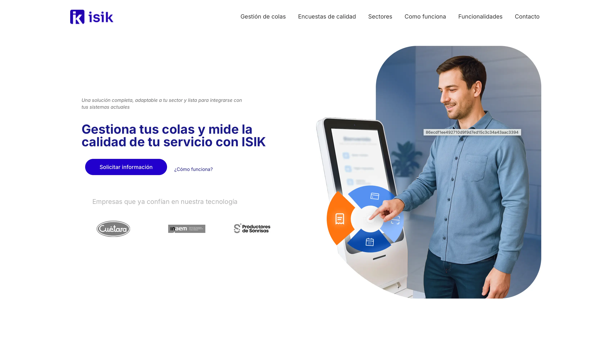
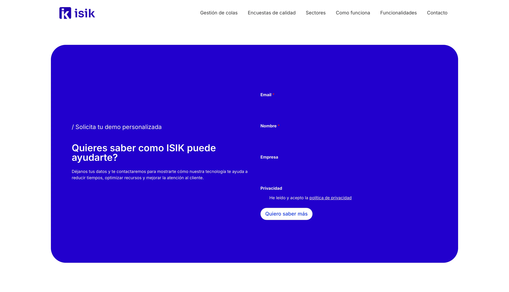
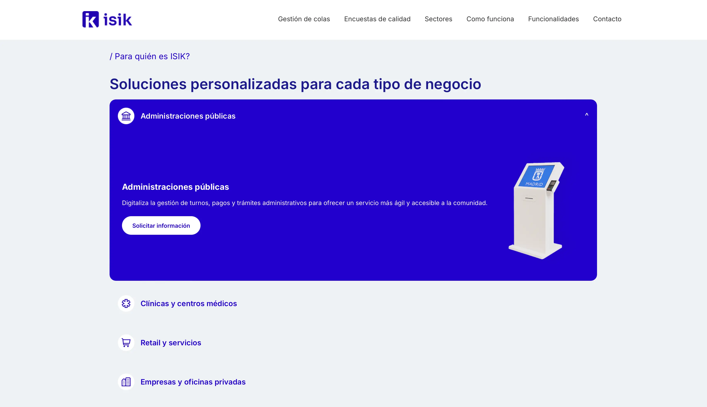
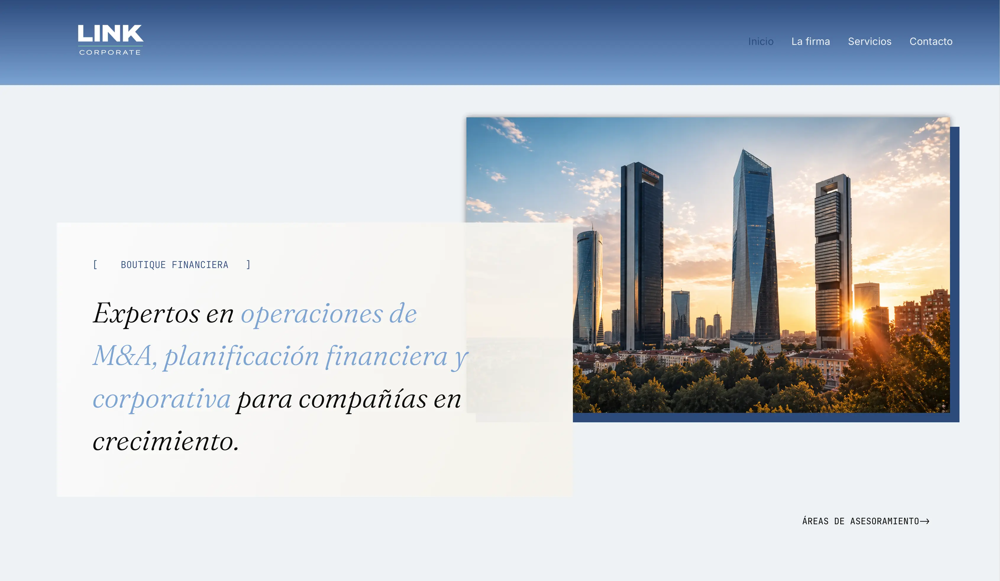
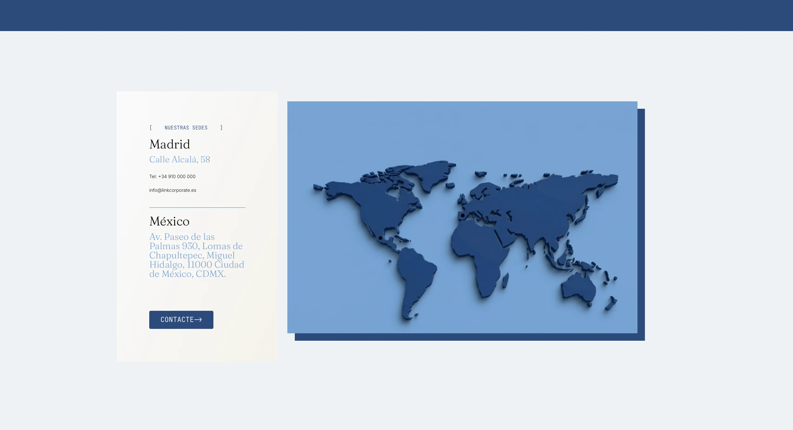
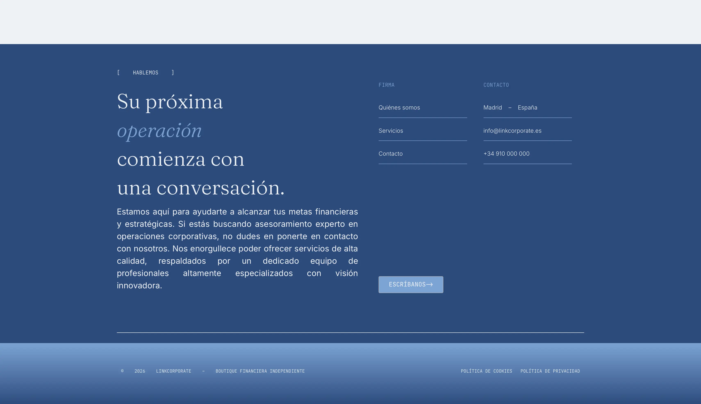
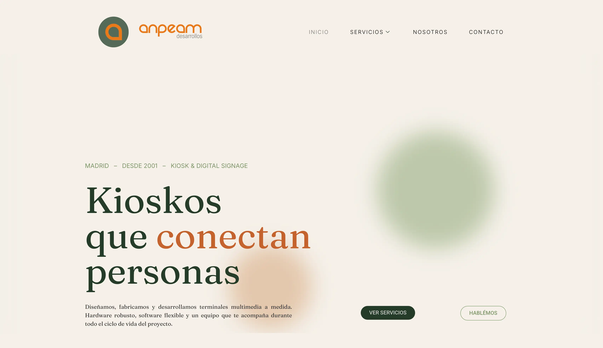
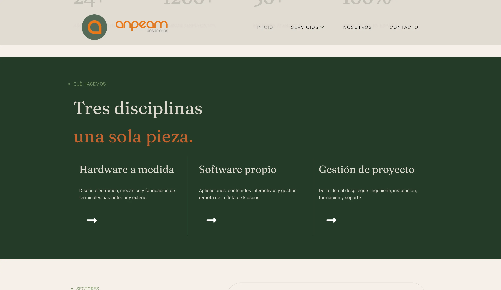
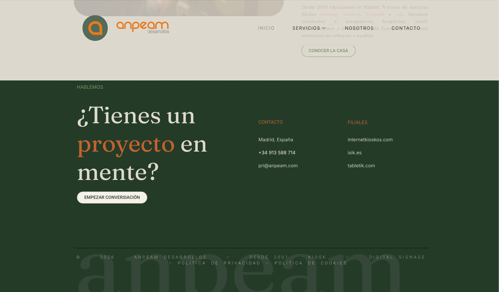

Webs para clientes
Tres webs reales que hice durante mis prácticas. Creadas con WordPress y Elementor. Están en el orden en que las creé. Partí de cero, sin apenas controlar WordPress. En la primera aprendía WordPress sobre la marcha y en la última el cliente me dio libertad total.
- WordPress
- Elementor (versión gratuita)
- WPForms
- Responsive Menu
- CSS
ISIK
La primera: aprendí a usar Wordpress sobre la marcha.



- El cliente
- ISIK hace software de gestión de colas y de encuestas de satisfacción: herramientas para organizar la atención al público y saber cómo ha ido.
- Lo que necesitaban
- Su web era antigua, sin interacción y con enlaces rotos. No estaba a la altura de su producto.
- Lo que hice
- Partí de un diseño en Figma que me dio la empresa y construí la web entera yo solo: maquetación, textos, formulario de contacto y SEO.
- Una decisión
- Hacerlo todo con herramientas gratuitas. Los menús desplegables y los formularios, que en Elementor son de pago, los resolví con plugins gratuitos.
- La dificultad
- Al ser la primera web, me tocó investigar sobre todo con los menús, a la hora de hacer el formulario con plugins gratuitos de Elementor y también a la hora maquetar. A parte de seguir tutoriales y ayuda de Claude.
- El resultado
- En una semana de trabajo conseguí entregarla, era la primera vez que usaba WordPress. Cuando la entregué, mi jefe me preguntó dónde había estado todo este tiempo.
Linkcorporate
La segunda web: conseguí más soltura en su construcción con una idea más clara.



- El cliente
- Una boutique financiera nacida de la escisión de otra firma, especializada en operaciones de M&A y planificación financiera para empresas en crecimiento.
- Lo que necesitaban
- No tenían web. Me dieron los textos y una web de referencia como inspiración.
- Lo que hice
- Creé desde el diseño, la selección y edición de fotos, la maquetación y las animaciones en CSS.
- La dificultad
- Las fotos llevaban marcos, y cualquier cambio de tamaño descuadraba la composición. Conseguí unificar medidas para evitar descuadres.
- El resultado
- Creé ocho páginas en cinco días. El cliente solo pidió algunos retoques de textos y colores.
anpeam
La última y con más experiencia



- El cliente
- Anpeam diseña, fabrica y programa terminales multimedia a medida, del hardware al software.
- Lo que necesitaban
- Su web era de principios de los 2000 y llevaba años sin mantenimiento.
- Lo que hice
- En este último trabajo, tuve libertad total. Desde el diseño, los colores, los textos y la maquetación.
- Una decisión
- Al tener total libertad quería una web visualmente diferente y usable, que proyectase en pocas palabras lo que la empresa quería transmitir.
- La dificultad
- La animación en CSS de la cabecera tenía que verse cuadrada y centrada en cualquier pantalla. Lo resolví ajustando márgenes a mano. Hoy lo haría con flexbox y aspect-ratio y me ahorraría trabajo.
- El resultado
- Cinco páginas en cinco días, y el cliente se quedó sorprendido y satisfecho.